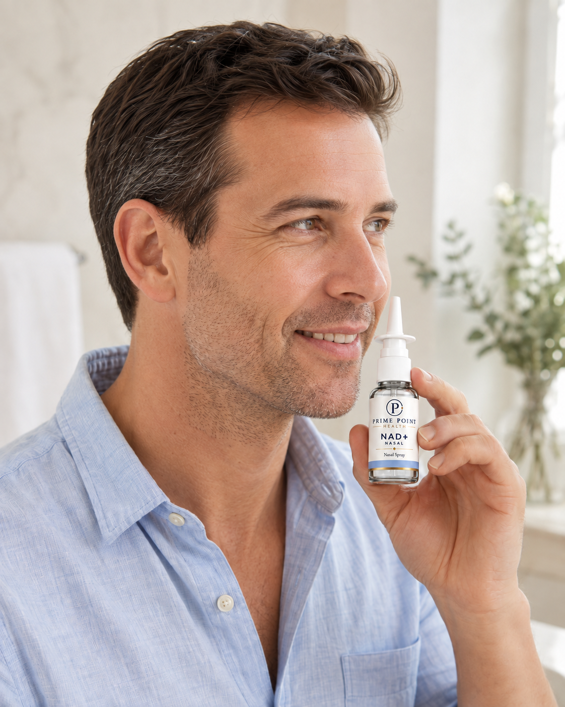

Cellular
energy
NAD+ helps cells turn nutrients into usable energy. By cycling between NAD+ and NADH, it carries electrons that help drive ATP production in mitochondria.

How NAD+ Works
NAD+ helps your cells make energy by carrying electrons from nutrients.
Accepts electrons as your cells
break down nutrients
Becomes NADH and transfers
electrons in mitochondria
Helps drive ATP production
to power cellular activity
Illustrative lifestyle image. Actual packaging may vary.
Longevity
Starting from $189 $210 10% off
A coenzyme involved in cellular energy metabolism and the processes that help cells function.
Prescription only when clinically appropriate. Eligibility and results vary.
NAD+ stands for nicotinamide adenine dinucleotide. It is a coenzyme found in cells that participates in energy metabolism and serves as a substrate for enzymes involved in cellular maintenance.
NAD+ nasal spray is a prescription wellness product that delivers nicotinamide adenine dinucleotide (NAD+)—a vital coenzyme found in all living cells—through tissue inside your nose, which contains a rich network of blood vessels. The medication absorbs quickly through this membrane directly into local tissues and the bloodstream.
Cellular Energy: Helps mitochondria produce ATP, the primary energy currency of cells.
DNA Repair & Longevity: Fuels enzymes like PARPs to fix damaged DNA and sirtuins to regulate cellular stress.
Brain Health: Supports high-energy neurons, potentially improving focus, mental clarity, and memory protection.
Sleep & Circadian Rhythms: Assists in regulating the body's internal clock to support sleep quality.
NAD+ helps cells turn nutrients into usable energy. By cycling between NAD+ and NADH, it carries electrons that help drive ATP production in mitochondria.
NAD+ is used by enzymes called PARPs and sirtuins. These enzymes help cells respond to DNA damage and coordinate repair and cellular stress responses.
Supports high-energy neurons, potentially improving focus, mental clarity, and memory protection.

The Prime Point quality standard
Before medication reaches a Prime Point patient, it is supported by a layered quality process designed to verify what is inside, protect its purity, and hold every pharmacy partner to a consistently high standard.
We test for potency to ensure every medication contains the correct concentration of active ingredients.
We ensure our pharmacy partners test for sterility so medications are free of foreign organisms, pathogens, and bacteria.
We test for endotoxicity to confirm medications adhere to established endotoxin safety recommendations.
Every medication is independently third-party tested, and every pharmacy is rigorously vetted before any partnership begins.